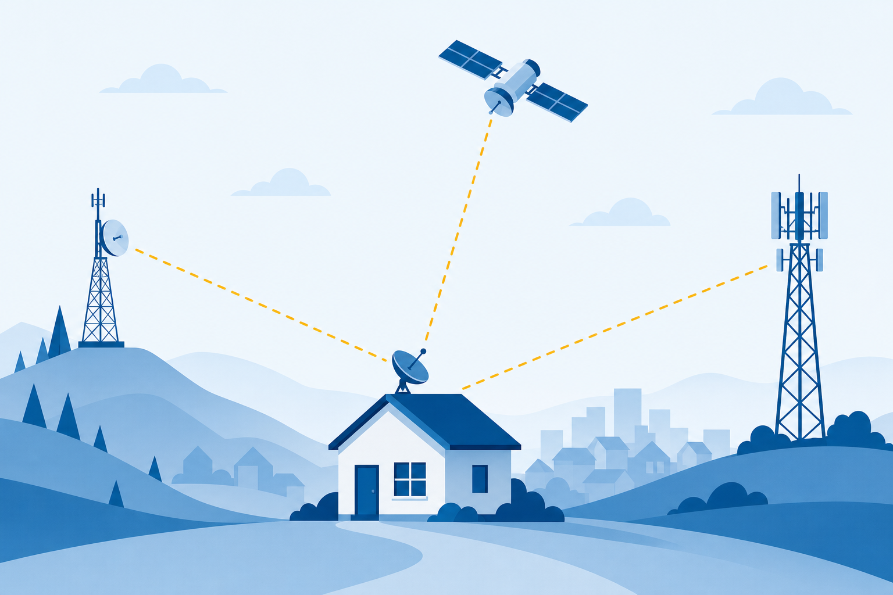
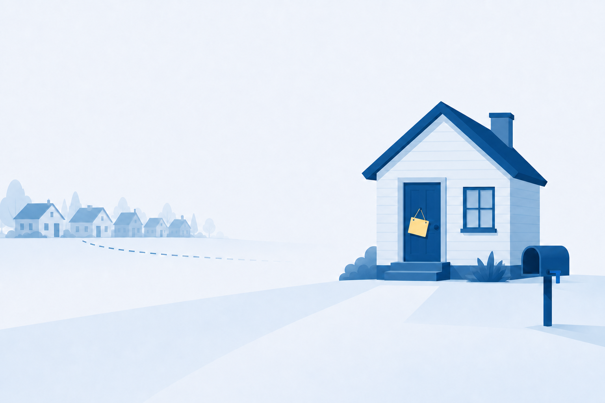

01
Compare
internet connection types, from phone lines to satellites.
Connection types, IP addresses, ports, and the lookups that carry one request across the world and back.
Start here: Your phone talks to a server on another continent. What address got the reply back to you?
internet connection types, from phone lines to satellites.
the four settings every host needs to reach beyond its LAN.
core protocols to the ports and jobs they own.
The front-desk PC arrives, you plug in one network cable, and the home page loads. No settings screen ever appeared.
Talk with a partner:
What must the PC already know before that page can load? List everything you can.
Telephone network (PSTN), two-pair copper. Asymmetric: downloads outrun uploads.
Cable TV coax with an F-type connector. Speaks DOCSIS.
FTTC finishes on copper. FTTP brings glass to the door.
Every modem does the same job: hand the street’s signal to your router’s WAN port.

Reads each packet’s destination address and sends it toward that network. Every interface starts a new broadcast domain.
An ACL matches packet headers: IP, MAC, protocol, port.
You manage both from a console cable or a web page in your browser.
One host rides the rest of class. Each concept we cover fills a blank on this card.
Watch the card. It closes before the exit ticket.
The message itself: web, mail, file transfer.
DataTCP or UDP keeps conversations apart by port.
SegmentThe IP address picks the destination network.
PacketThe MAC address delivers on the local segment.
FrameEach layer wraps the one above it, like an envelope around a letter.
Each octet is 8 bits and runs 0 to 255. The dots exist for humans, not for the wire.
| Class | First octet | Mask | Prefix |
|---|---|---|---|
| A | 0-127 | 255.0.0.0 | /8 |
| B | 128-191 | 255.255.0.0 | /16 |
| C | 192-223 | 255.255.255.0 | /24 · ours |
swaps private for public
sees one public address
Read it as a symptom: see 169.254 and check the DHCP server and the cable before anything else.

Eight 16-bit groups, hex digits, colons between.
Guaranteed delivery, controlled by flags.
No sequencing, no acknowledgments, no promises.
Question: A DNS lookup is one tiny packet. Why is UDP the right tool for it?
Ports keep many conversations apart on one host. Learn these defaults cold.
“www.example.com?”
Checked first, on the PC.
Answers from cache when it can.
Root, then TLD (.com), then authoritative.
203.0.113.10
SOA, NS, SRV, and TXT round out the family. SPF, DKIM, and DMARC fight spoofed mail.
Splits the broadcast domain for performance and security. Configured on the switch.
Secure tunneled traffic over a non-secure connection. The answer to public Wi-Fi.
DORA fills the card
DNS: 203.0.113.10
Not local: gateway
NAT goes public
SYN, SYN/ACK, ACK
HTTPS on 443
Every step used a setting from the card or a door from the port grid. Nothing was magic.
Name the four settings every host needs for full communications.
A PC shows 169.254.7.20. What happened, and where do you look?
Which port and protocol deliver a secure web page?
Next step: Run the CertMaster labs: Connect a Cable Modem and Configure IP Addresses, then the challenge lab Install a SOHO Network. Module 7 turns to the services networks host.